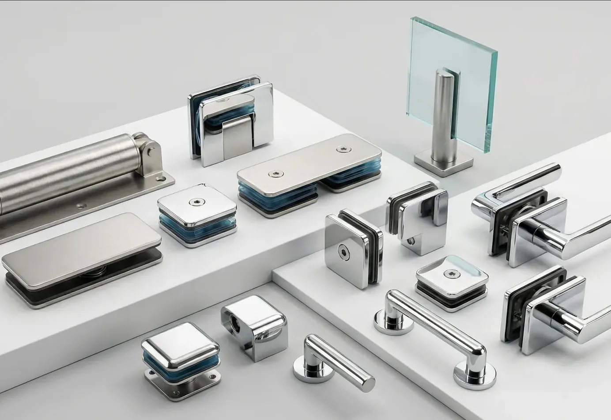
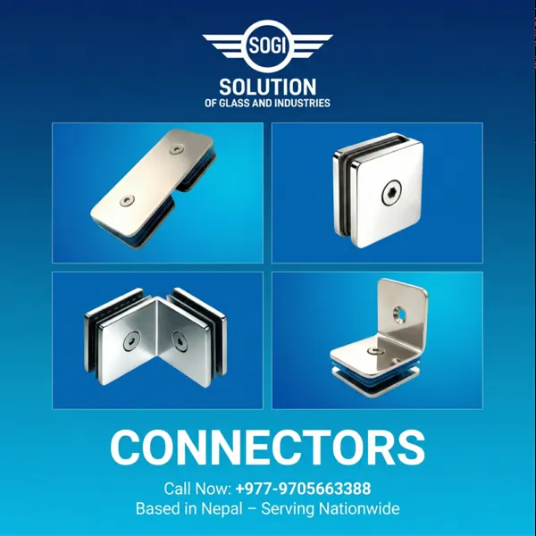
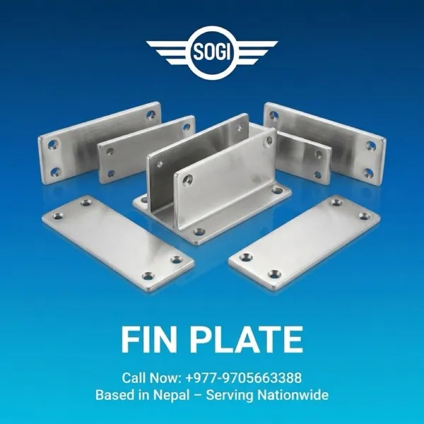
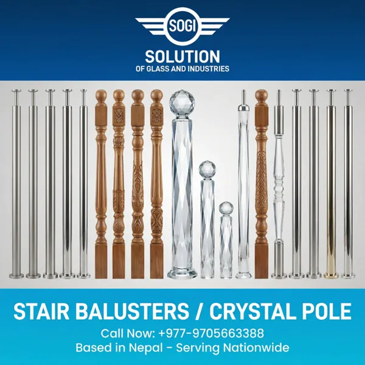
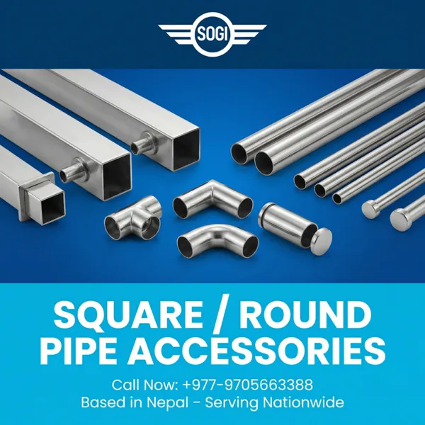
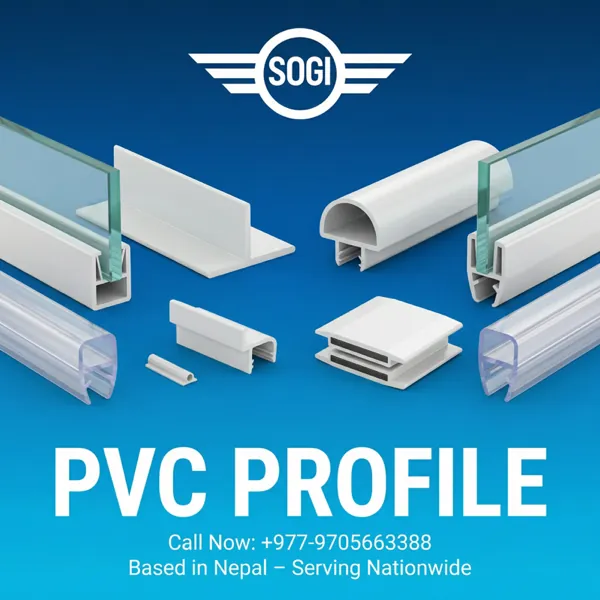
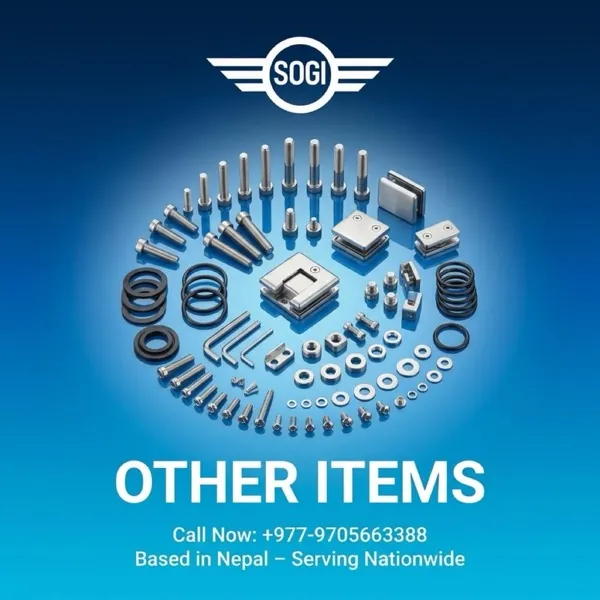
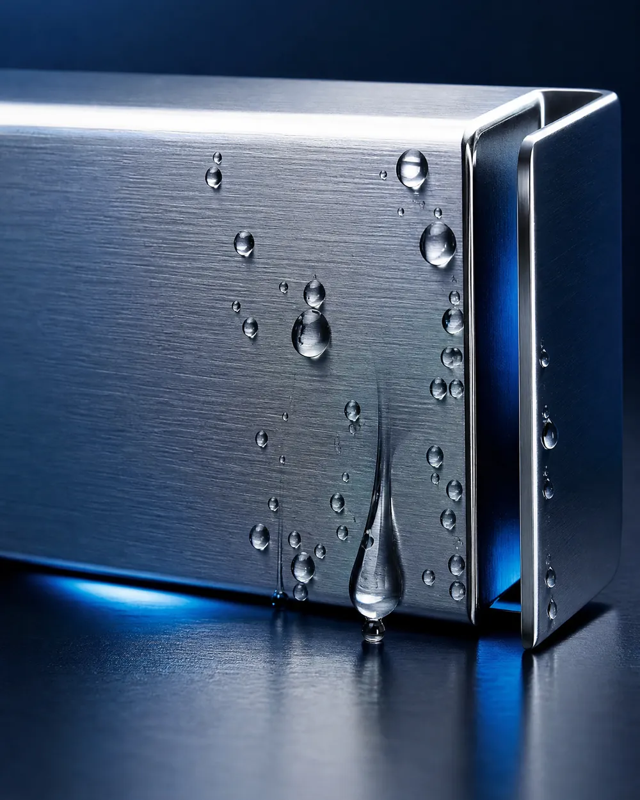

Floor Spring & Patch Fitting
Concealed floor springs with top, bottom, lock and L-patch fittings for 10–12 mm toughened glass doors.
- Floor spring
- Top patch
- Bottom patch
- Lock patch
- L-patch
- Over-panel patch

Stainless steel fittings for toughened glass doors, partitions, showers, railings, canopies and spider glazing. Manufactured and supplied by SOGI for fabricators, contractors, wholesalers and retailers.
SOGI manufactures its own stainless steel glass hardware in Bharatpur, Chitwan: connectors, patch fittings, handles, shower hinges, spigots, spider and canopy fittings. Alongside our own production we stock a full range of channels, locks, silicone and accessories, over 1,200 products in total.

Tap any category to ask for price and stock on WhatsApp. For the full 1,200+ item list, ask for our catalogue PDF.
Concealed floor springs with top, bottom, lock and L-patch fittings for 10–12 mm toughened glass doors.

L, U, T, GTG 90° and GTG 180° connectors and wall-to-glass connectors for partitions and showers.
Stainless steel pull handles for glass doors in mirror, matt, black and gold finishes.
Locks for frameless glass doors, including patch locks and centre locks for double doors.

Glass-to-wall and glass-to-glass shower hinges (90°, 135°, 180°) in SS304 for wet areas.
Sliding roller kits and SS bars for sliding shower enclosures and sliding glass doors.
Stabiliser bars, knight-head clamps and accessories for frameless shower systems.
1-, 2- and 4-arm stainless steel spider fittings for spider glazing and canopies.
Swivel point fixings that hold glass in spider fittings while allowing movement.

Stainless steel fin plates for glass stabilising fins in spider-glazed walls.
Wall brackets, tie rods and glass clamps for laminated glass canopies.
SS304 spigots, side studs, glass clamps and handrail parts for glass railings.

Stainless steel and crystal balusters and poles for staircases.

Elbows, brackets, end caps and connectors for SS handrails and pipe railings.
U-channels, bottom tracks and top rails for glass partitions and shop fronts.

PVC seal strips and edge profiles for shower doors and glass edges.
Neutral and structural silicone sealants and application accessories for glass work.
Joining plates for connecting railing channels, posts and handrails.

Glass clamps, shelf brackets, standoffs, stoppers and other accessories.
| SS304 | SS202 | |
|---|---|---|
| Rust resistance | High: suits wet & outdoor use | Lower: dry indoor use |
| Use for | Showers, entrances, railings, canopies | Indoor partitions, furniture glass |
| Cost | Higher | Lower |

WhatsApp the items, sizes, finish and quantity, or a photo of the job.
We confirm availability, dealer pricing and the delivery date.
Pickup from Bharatpur or delivery across Nepal.
Yes. SOGI supplies fabricators, contractors, wholesalers and retailers across Nepal. Send your list on WhatsApp (+977-9705663388) for dealer rates and stock.
Use SS304. It resists rust in wet and outdoor conditions. SS202 is suitable only for dry indoor areas.
Mirror-polished stainless steel is standard. Matt (satin), black and gold finishes are available on many items.
Yes. Order online on WhatsApp or by phone and SOGI delivers anywhere in Nepal, from Bharatpur and our branches in the Kathmandu Valley and Birgunj.
Yes. Floor spring, top and bottom patches, lock patch, handle and over-panel patch can all be supplied as a matched set for your glass size.
Send your hardware list for dealer rates and stock confirmation.